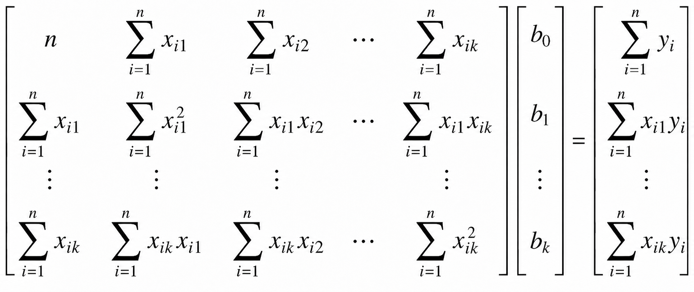
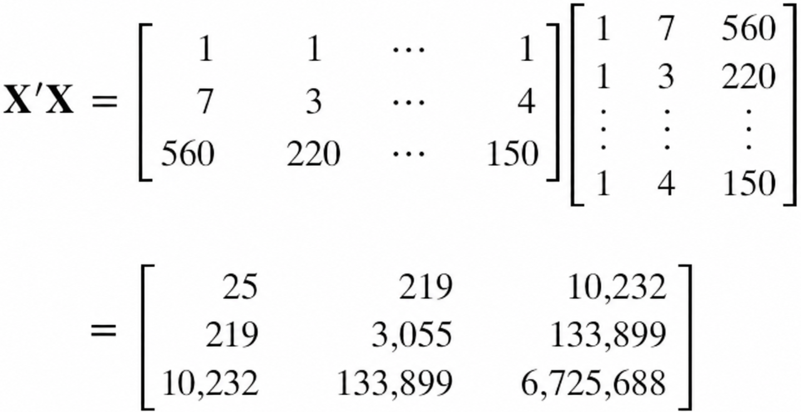
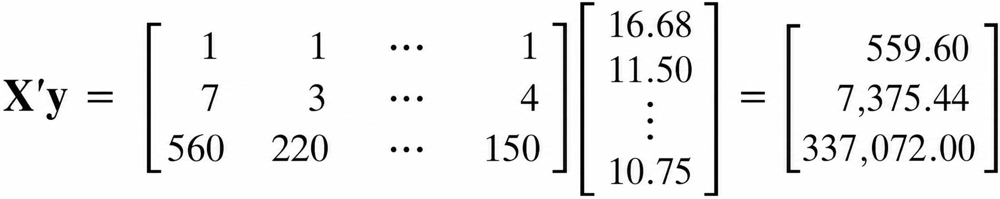
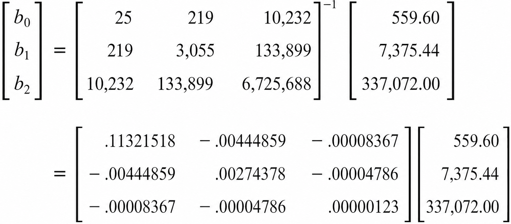
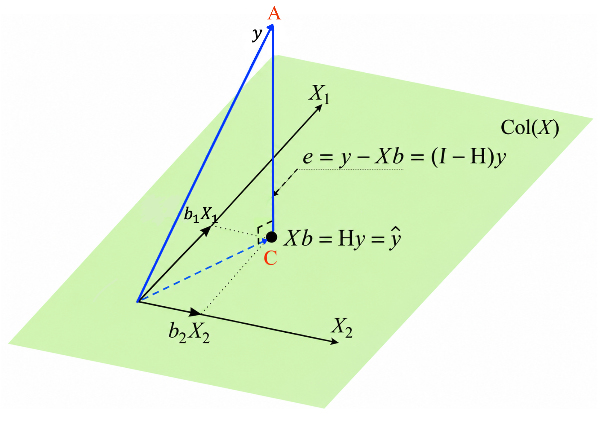
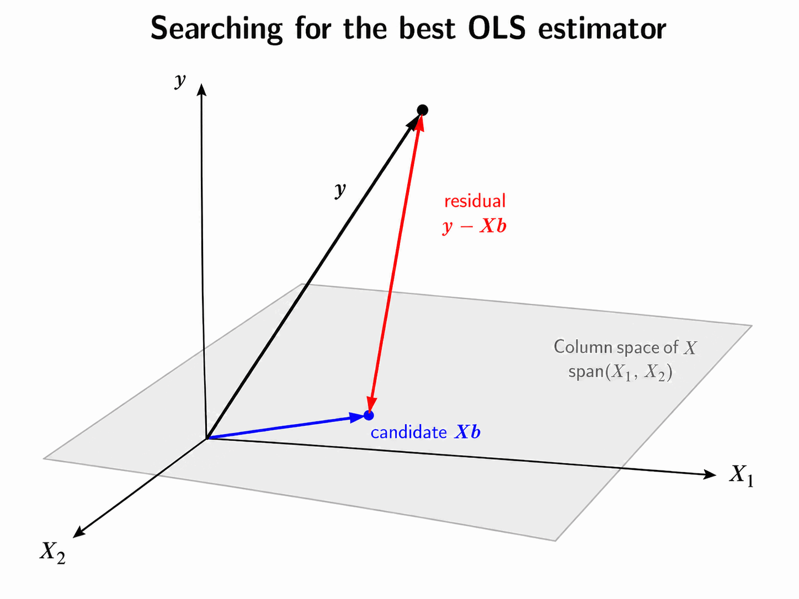

Multiple Linear Regression - Matrix Approach
MATH 4780/MSSC 5780 Regression Analysis
Regression Model in Matrix Form
\[y_i= \beta_0 + \beta_1x_{i1} + \beta_2x_{i2} + \dots + \beta_kx_{ik} + \epsilon_i, \quad \epsilon_i \stackrel{iid}{\sim} N(0, \sigma^2), \quad i = 1, 2, \dots, n\]
. . .
\[\bf y = \bf X \boldsymbol \beta+ \boldsymbol \epsilon\]
\[\begin{align} \bf y = \begin{bmatrix} y_1 \\ y_2 \\ \vdots \\ y_n \end{bmatrix},\quad \bf X = \begin{bmatrix} 1 & x_{11} & x_{12} & \cdots & x_{1k} \\ 1 & x_{21} & x_{22} & \cdots & x_{2k} \\ \vdots & \vdots & \vdots & \ddots & \vdots \\ 1 & x_{n1} & x_{n2} & \cdots & x_{nk} \end{bmatrix}, \quad \boldsymbol \beta= \begin{bmatrix} \beta_0 \\ \beta_1 \\ \vdots \\ \beta_k \end{bmatrix} , \quad \boldsymbol \epsilon= \begin{bmatrix} \epsilon_1 \\ \epsilon_2 \\ \vdots \\ \epsilon_n\end{bmatrix} \end{align}\]
- \({\bf X}_{n \times p}\): Design matrix
- \(\boldsymbol \epsilon\sim N_n({\bf 0}, \sigma^2 {\bf I}_n)\) 1
- Let’s first write our model in a matrix form.
- \(\bf X\) is usually called the design matrix.
Regression Model in Matrix Form
For a random vector \({\bf Z} = (Z_1, \dots, Z_n)'\), its mean vector is \[E({\bf Z}) = E\begin{pmatrix} Z_1 \\ Z_2 \\ \vdots \\ Z_n\end{pmatrix} = \begin{bmatrix} E(Z_1) \\ E(Z_2) \\ \vdots \\ E(Z_n)\end{bmatrix}\]
Its (symmetric) variance-covariance matrix is \[\scriptsize \begin{align} \mathrm{Cov}({\bf Z}) = {\bf \Sigma} &= \begin{bmatrix} \mathrm{Var}(Z_1) & \mathrm{Cov}(Z_1, Z_2) & \cdots & \mathrm{Cov}(Z_1, Z_n) \\ \mathrm{Cov}(Z_2, Z_1) & \mathrm{Var}(Z_2) & \cdots & \mathrm{Cov}(Z_2, Z_n) \\ \vdots & \vdots & \ddots & \vdots \\ \mathrm{Cov}(Z_n, Z_1) & \mathrm{Cov}(Z_n, Z_2) & \cdots & \mathrm{Var}(Z_n) \end{bmatrix} \end{align}\]
Least Squares Estimation in Matrix Form
\[S(\beta_0, \beta_1, \dots, \beta_k) = \sum_{i=1}^n\epsilon_i^2 = \sum_{i=1}^n\left(y_i - \beta_0 - \sum_{j=1}^k\beta_j x_{ij}\right)^2\]
\[\begin{align} \left.\frac{\partial S}{\partial\beta_0}\right\vert_{b_0, b_1, \dots, b_k} &= -2 \sum_{i=1}^n\left(y_i - b_0 - \sum_{j=1}^k b_j x_{ij}\right) = 0\\ \left.\frac{\partial S}{\partial\beta_j}\right\vert_{b_0, b_1, \dots, b_k} &= -2 \sum_{i=1}^n\left(y_i - b_0 - \sum_{j=1}^k b_j x_{ij}\right)x_{ij} = 0, \quad j = 1, 2, \dots, k \end{align}\]
. . .
\[\begin{align} S(\boldsymbol \beta) = \sum_{i=1}^n\epsilon_i^2 = \boldsymbol \epsilon'\boldsymbol \epsilon= ({\bf y} - {\bf X} \boldsymbol \beta)'({\bf y} - \bf X \boldsymbol \beta) \end{align}\]
\[\begin{align} S(\boldsymbol \beta) = \sum_{i=1}^n\epsilon_i^2 = \boldsymbol \epsilon'\boldsymbol \epsilon&= ({\bf y} - {\bf X} \boldsymbol \beta)'({\bf y} - \bf X \boldsymbol \beta) \\ &= {\bf y'}{\bf y} - \boldsymbol \beta'{\bf X'}{\bf y} - {\bf y'}{\bf X} \boldsymbol \beta+ \boldsymbol \beta' \bf X' \bf X \boldsymbol \beta\\ &={\bf y}'{\bf y} - 2\boldsymbol \beta'{\bf X}'{\bf y} + \boldsymbol \beta' {\bf X}' {\bf X} \boldsymbol \beta \end{align}\]
Least Squares Estimation in Matrix Form
\[\begin{align} S(\boldsymbol \beta) = \sum_{i=1}^n\epsilon_i^2 = \boldsymbol \epsilon'\boldsymbol \epsilon&= ({\bf y} - {\bf X} \boldsymbol \beta)'({\bf y} - \bf X \boldsymbol \beta) \\ &= {\bf y}'{\bf y} - \boldsymbol \beta'{\bf X}'{\bf y} - {\bf y}'{\bf X} \boldsymbol \beta+ \boldsymbol \beta' \bf X' \bf X \boldsymbol \beta \end{align}\]
- Normal equations: \(\begin{align} \left.\frac{\partial S}{\partial \boldsymbol \beta}\right \vert_{\bf b} = -2 {\bf X}' {\bf y} + 2 {\bf X}' {\bf X} {\bf b} = \boldsymbol{0} \end{align}\)
- To get the LSE in a matrix form, we first write the sum of squares using matrices.
. . .
- LSE for \(\boldsymbol \beta\):
\[\begin{align} \boxed{{\bf b} = ({\bf X}' {\bf X}) ^{-1} {\bf X}' \bf y} \end{align}\]
Normal Equations
\((\bf X' \bf X){ \bf b} = {\bf X'} {\bf y}\)
- Simple linear regression case.
Design Matrix and Outcome Vector
y <- as.matrix(delivery_data$time)16.7
11.5
12.0
14.9
13.8
18.1
8.0
17.8
79.2
21.5
40.3
21.0
13.5
19.8
24.0
29.0
15.3
19.0
9.5
35.1
17.9
52.3
18.8
19.8
10.8Regression Coefficients



Hat Matrix
\[\hat{\bf y} = {\bf X} {\bf b} = {\bf X} ({\bf X}' {\bf X}) ^{-1} {\bf X}' {\bf y} = {\bf H} {\bf y}\]
\({\bf H} = {\bf X} ({\bf X}' {\bf X}) ^{-1} {\bf X}'\) is called hat matrix whose elements are \(h_{ij} = \dfrac{1}{n} + \dfrac{(x_i-\overline{x})(x_j-\overline{x})}{S_{xx}}\)
The vector of residuals \(e_i = y_i - \hat{y}_i\) is \[{\bf e} = {\bf y} - \hat{\bf y} ={ \bf y} - {\bf X} {\bf b} = {\bf y} - {\bf H} {\bf y} = ({\bf I} - {\bf H}) {\bf y}\]
. . .
- Both \(\bf H\) and \(\bf I-H\) are symmetric and idempotent. They are orthogonal projection matrices.
- \(\bf H\) projects \(\bf y\) to \(\hat{\bf y}\) on the \(p\)-dimensional space spanned by columns of \(\bf X\), or the column space of \(\bf X\), \(Col({\bf X}) = \{ {\bf Xv}: {\bf v} \in {\bf R}^p \}\).
- \(\bf I - H\) projects \(\bf y\) to \(\bf e\) on the space perpendicular to \(Col(\bf X)\), or \(Col(\bf X)^{\bot}\).
- The vector of fitted values \(\hat{y}_i\) corresponding to \(y_i\) is \[\hat{\bf y} = \bf X \bf b = \bf X (\bf X' \bf X) ^{-1} \bf X' \bf y = \bf H \bf y\]
- \(\bf H\) plays an important role in regression analysis.
- And it will be shown up many times later in many topics of this course.
- OK. It’s a little abstract. Let’s look into the geometrical interpretation of least squares little by little.
Geometrical Interpretation of Least Squares
- \({\bf y} \notin Col({\bf X})\)
- \(\hat{{\bf y}} = {\bf Xb} = {\bf H} {\bf y} \in Col({\bf X})\)
- Minimize the distance of \(\color{red}{A}\) to \(Col(\bf X)\): Find the point in \(Col(\bf X)\) that is closest to \(A\).

-
- what is column space of \(X\)?
- The col space of \(X\) is the set or the collection of all linear combinations of columns of \(X\). In other words, column space of \(X\) is the space spanned by the columns of \(X\).
- Example
- For visualization purpose, suppose \(X\) has 2 columns, \(x_1\) and \(x_2\). The column space of \(X\) will be the plane spanned by the 2 columns, shown in green color.
-
- observation \(y\).
- Basically 99% of the time, \(Y\) will not be in the column space of \(X\).
- \(y_i = b_0 + b_1x_{i1} + ... + b_kx_{ik} + e_i\)
- \(y_i\) is not the linear combo of columns of \(X\), and \(y\) is not a point in Col(X).
- So \(y\) is point in the \(n\)-dimensional space, and not on the plane spanned by columns of \(X\).
-
- H (Let’s see what the projection matrix \(H\) is doing)
- When we multiply \(H\) by \(y\), we are finding the projection of \(y\) onto the Col(X).
- The projection of \(y\) on the Col(X) is actually the fitted value \(\hat{y}\).
- \(\hat{y}_i = b_0 + b_1x_{i1} + ... + b_kx_{ik}\)
- There are so many (actually infinitely many) linear combo of columns of \(X\), why this particular vector is our \(\hat{y}\)?
- The distance between \(y\) and Col(X) is actually the shortest when we do the projection of \(y\) onto the Col(X).
- In other words the distance between \(y\) and \(\hat{y}\) is the minimal distance among all the distance between \(y\) and any point in the Col(X).
Geometrical Interpretation of Least Squares
- The distance is minimized when the point in the space is the foot of the line from \(A\) normal to the space. This is point \(C\). \(\small {\bf e} = ({\bf I} - {\bf H}) {\bf y} \perp Col({\bf X})\)
- \({\bf X}'( {\bf y} - {\bf Xb}) = {\bf 0}\)
Searching for the LS solution \(\bf b\) that minimizes \(SS_{res}\) is the same as locating the point \({\bf Xb} \in Col({\bf X})\) that is as close to \(\bf y\) as possible!

-
- (I - H) Now let’s see what (I - H) is doing.
- The residual vector is \(y - \hat{y}\). Geometrically, the residual vector is this dash line vector that is perpendicular to the column space of \(X\). In other words,the residual vector is the normal vector of Col(X).
- This is the result of projection. The distance between \(y\) and the column space is minimized when the point in the space is the foot of the line from \(A\) normal to the space. This is point \(C\).
- We know that e = (I - H)y. So (I - H) project \(Y\) onto the space that is perpendicular to Col(X). And the vector in that space is the residual vector.
- Calculus connects to Linear Algebra
R Lab Verify Identity
\({\bf H} = {\bf X} ({\bf X}' {\bf X}) ^{-1} \bf X'\)
\(\hat{\bf y} = \bf H \bf y\)
fitted_y <- H %*% y
fitted_y[1:4][1] 22 10 12 10delivery_lm$fitted.values[1:4] 1 2 3 4
22 10 12 10 Multivariate Normal Distribution
\({\bf b} = ({\bf X}' {\bf X}) ^{-1} \bf X' \bf y\)
\[\textbf{b} \sim N\left(\boldsymbol \beta, \sigma^2 {( {\bf X'} {\bf X} )}^{-1} \right)\]
The standard error of \(b_j\) is \({\sqrt{s^2C_{jj}}}\), where \(C_{jj}\) is the diagonal element of \(( {\bf X'} {\bf X} )^{-1}\) corresponding to \(b_j\).
If \({\bf y} \sim N_n(\bsmu, {\bf \Sigma})\), and \({\bf Z = By + c}\) with a constant vector \(\bf c\), then \[{\bf Z} \sim N({\bf B\bsmu}, {\bf B \Sigma B}')\]. \[\mathrm{Var}(\textbf{b}) = E\left[(\textbf{b} - E(\textbf{b}))(\textbf{b}-E(\textbf{b}))'\right] = \mathrm{Var}\left[\bf{(X'X)^{-1}X'y}\right] = \sigma^2 \bf (X'X)^{-1}\]
- The standard error of \(b_j\) is \({\sqrt{\hat{\sigma}^2C_{jj}}}\), where \(C_{jj}\) is the diagonal element of \(({\bf X'X})^{-1}\) corresponding to \(b_j\).
Hypothesis Testing
Tests on Subsets of Coefficients
Reduced Model vs. Full Model
Overall test of significance: all predictors
Partial individual \(t\)-test: one single predictor
How to test any subset of predictors?
. . .
- Full Model: \(y = \beta_0 + \beta_1x_1+\beta_2x_2 + \beta_3x_3 + \beta_4x_4 + \epsilon\)
- \(H_0: \beta_{2} = \beta_{4} = 0\)
. . .
- Reduced Model (under \(H_0\)): \(y = \beta_0 + \beta_1x_1 + \beta_3x_3 + \epsilon\)
- Like to see if \(x_2\) and \(x_4\) can contribute significantly to the regression model when \(x_1\) and \(x_3\) are in the model.
- If yes, \(\beta_{2} \ne 0\) and/or \(\beta_{4} \ne 0\). (Reject \(H_0\))
- Otherwise, \(\beta_{2} = \beta_{4} = 0\). (Do not reject \(H_0\))
. . .
Given \(x_1\) and \(x_3\) in the model, we examine how much extra \(SS_R\) is increased ( \(SS_{res}\) is reduced) if \(x_2\) and \(x_4\) are added to the model.
- If much more extra \(SS_R\) is increased after \(x_2\) and \(x_4\) are included in the model, meaning that lots of variation in \(y\) that were treated as unexplained variation or variation that cannot be explained by the \(x_1\) and \(x_3\), now are absorbed or explained by \(x_2\) and \(x_4\).
- \(x_2\) and \(x_4\) provide some important and valuable information that \(x_1\) and \(x_3\) cannot provide, and that information helps us better predict response values and explain the variation of \(Y\).
- So if we observe a significant increase in SS_R, it means that \(x_2\) and \(x_4\) are valuable and their coefficient is significantly non-zero. Therefore, we should keep the full model that includes all predictors, or reject \(H_0\) because the reduced model is too simple, and lose lots of useful information for explaining variation in \(Y\).
Extra Sum-of-squares
Full Model: \(\bf y = X\boldsymbol \beta+\boldsymbol \epsilon\)
Partition coefficient vector:
\[\boldsymbol \beta_{p \times 1} = \left[ \begin{array}{c} \boldsymbol \beta_1 \\ \hline \boldsymbol \beta_2 \end{array} \right]\]
where \(\boldsymbol \beta_1\) is \((p-r) \times 1\) and \(\boldsymbol \beta_2\) is \(r \times 1\)
Test \(H_0: \boldsymbol \beta_2 = {\bf 0}\), \(H_1: \boldsymbol \beta_2 \ne {\bf 0}\)
Example: \(p=5\), \(r=2\), \(\boldsymbol \beta_1 = (\beta_0, \beta_1, \beta_3)'\), \(\boldsymbol \beta_2 = (\beta_2, \beta_4)'\).
- For simplicity, we can partition the coefficient vector to beta_1 and beta_2, where beta_2 is the subset we’d like to test.
- \(1 \le r \le k\)
. . .
\[{\bf y} = {\bf X} \boldsymbol \beta+\boldsymbol \epsilon= {\bf X}_1\boldsymbol \beta_1 + {\bf X}_2\boldsymbol \beta_2 + \boldsymbol \epsilon\]
\(n \times (p-r)\) matrix \({\bf X}_1\): the columns of \(\bf X\) associated with \(\boldsymbol \beta_1\)
\(n \times r\) matrix \({\bf X}_2\): the columns of \(\bf X\) associated with \(\boldsymbol \beta_2\)
Extra Sum-of-squares
Full Model: \(\small \color{red}{{\bf y} = {\bf X}\boldsymbol \beta+\boldsymbol \epsilon= {\bf X}_1\boldsymbol \beta_1 + {\bf X}_2\boldsymbol \beta_2 + \boldsymbol \epsilon}\)
- \({\bf b} = ({\bf X}' {\bf X}) ^{-1} {\bf X}' {\bf y}\)
Reduced Model: \(\small \color{red}{{\bf y} = {\bf X}_1\boldsymbol \beta_1+\boldsymbol \epsilon}\) \(\color{red}{(\boldsymbol \beta_2 = {\bf 0})}\)
- \({\bf b}_1 = ({\bf X}_1' {\bf X}_1) ^{-1} {\bf X}_1' {\bf y}\)
- To find the contribution of the terms in \(\boldsymbol \beta_2\) to the regression, fit the model assuming that \(H_0: \bf \boldsymbol \beta_2 = 0\) is true.
. . .
The \(SS_R\) due to \(\boldsymbol \beta_2\) given that \(\boldsymbol \beta_1\) is in the model is \[\begin{align} SS_R(\boldsymbol \beta_2|\boldsymbol \beta_1) &= SS_R(\boldsymbol \beta) - SS_R(\boldsymbol \beta_1)\\ &= SS_R(\boldsymbol \beta_1, \boldsymbol \beta_2) - SS_R(\boldsymbol \beta_1) \end{align}\] with \(r\) dfs.
This is the extra sum of squares due to \(\boldsymbol \beta_2\).
It measures the increase in the \(SS_R\) that results from adding regressors in \({\bf X}_2\) to the model that already contains regressors in \({\bf X}_1\).
- The regression sum of squares due to \(\boldsymbol \beta_2\) given that \(\boldsymbol \beta_1\) is in the model is \[SS_R(\boldsymbol \beta_2|\boldsymbol \beta_1) = SS_R(\boldsymbol \beta) - SS_R(\boldsymbol \beta_1)\] with \(p - (p-r) = r\) dfs.
- This is extra sum of squares due to \(\boldsymbol \beta_2\).
- It measures the increase in the \(SS_R\) that results from adding \(x_{k-r+1}, x_{k-r+2}, \dots, x_k\) to the model that already contains \(x_{1}, x_{2}, \dots, x_{k-r}\).
- To find the contribution of the terms in \(\boldsymbol \beta_2\) to the regression, fit the model assuming that \(H_0: \bf \boldsymbol \beta_2 = 0\) is true.
Partial \(F\)-test
\(F_{test} = \dfrac{SS_R(\boldsymbol \beta_2|\boldsymbol \beta_1)/r}{SS_{res}(\boldsymbol \beta)/(n-p)} = \dfrac{MS_R(\boldsymbol \beta_2|\boldsymbol \beta_1)}{MS_{res}}\)
Under \(H_0\) that \(\boldsymbol \beta_2 = \bf 0\), \(F_{test} \sim F_{r, n-p}\). \((p = k+1)\)
Reject \(H_0\) if \(F_{test} > F_{\alpha, r, n-p}\).
. . .
Given the regressors of \({\bf X}_1\) are in the model,
If the regressors of \({\bf X}_2\) contribute much, \(SS_R(\boldsymbol \beta_2|\boldsymbol \beta_1)\) will be large.
A large \(SS_R(\boldsymbol \beta_2|\boldsymbol \beta_1)\) implies a large \(F_{test}\).
A large \(F_{test}\) tends to reject \(H_0\), and conclude that \(\boldsymbol \beta_2 \ne \bf 0\).
\(\boldsymbol \beta_2 \ne \bf 0\) means the regressors of \({\bf X}_2\) provide additional explanatory and prediction power that \({\bf X}_1\) cannot provide.
Example: Delivery Data
\(H_0: \beta_2 = 0 \qquad H_1: \beta_2 \ne 0\)
Full model: \(y = \beta_0 + \beta_1x_1+\beta_2x_2+\epsilon\)
. . .
What is the reduced model?
. . .
- Reduced model: \(y = \beta_0 + \beta_1x_1 +\epsilon\)
. . .
- \(SS_R(\beta_2|\beta_1, \beta_0) = SS_R(\beta_2, \beta_1, \beta_0) -SS_R(\beta_1, \beta_0)\)
- \(F_{test} = \dfrac{SS_R(\beta_2|\beta_1, \beta_0)/1}{SS_{res}(\boldsymbol \beta)/(25-3)}\)
- Reject \(H_0\) if \(F_{test} > F_{\alpha, 1, 22}\)
. . .
When \(r=1\), partial \(F\)-test is equivalent to marginal \(t\)-test.
Extra Sum-of-squares Approach
Analysis of Variance Table
Model 1: time ~ cases
Model 2: time ~ cases + distance
Res.Df RSS Df Sum of Sq F Pr(>F)
1 23 402
2 22 234 1 168 15.8 0.00063 ***
---
Signif. codes: 0 '***' 0.001 '**' 0.01 '*' 0.05 '.' 0.1 ' ' 1summ_delivery$coefficients Estimate Std. Error t value Pr(>|t|)
(Intercept) 2.341 1.0967 2.1 4.4e-02
cases 1.616 0.1707 9.5 3.3e-09
distance 0.014 0.0036 4.0 6.3e-04General Linear Hypothesis
Previous testing procedures are special cases of the general linear hypothesis testing.
\(H_0: {\bf T\boldsymbol \beta= c}\), where \({\bf T}\) is an \(m \times p\) constant matrix and \(\bf c\) is a \(m \times 1\) constant vector.
There are \(m\) linear hypotheses to be tested. 2
Full Model: \(y = \beta_0 + \beta_1x_1+\beta_2x_2 + \beta_3x_3 + \epsilon\)
The model under \(H_0\) is the reduced model or restricted model.
\[H_0: \begin{align}&\beta_1 + 2 \beta_2 = 0 \\ &\beta_3 = 2 \end{align}\]
\[\begin{bmatrix} 0 & 1 & 2 & 0 \\ 0 & 0 & 0 & 1 \end{bmatrix}\begin{bmatrix} \beta_0 \\ \beta_1 \\ \beta_2 \\ \beta_3 \end{bmatrix}= \begin{bmatrix} 0 \\ 2 \end{bmatrix} \iff {\bf T}_{2 \times 4} \boldsymbol \beta_{4 \times 1} = {\bf c}_{2 \times 1}\]
General \(F\)-test
Reject \(H_0\) if \(F_{test} > F_{\alpha, r, n-p}\), where \(r\) is the rank of \(\bf T\). \((F_{test}\) is shown in Eq. (3.43) in LRA)
Back to Delivery example. Suppose we test \(H_0: \beta_{1} = \beta_{2} = 0 \quad H_1: \beta_j \ne 0 \text{ for at least one } j\)
. . .
What are \(\bf T\), \(\boldsymbol \beta\) and \(\bf c\)?
. . .
\[H_0: \begin{align} &\beta_1 = 0 \\ &\beta_2 = 0 \end{align}\]
\[\begin{bmatrix} 0 & 1 & 0 \\ 0 & 0 & 1 \end{bmatrix}\begin{bmatrix} \beta_0 \\ \beta_1 \\ \beta_2 \end{bmatrix}= \begin{bmatrix} 0 \\ 0 \end{bmatrix}\]
R Lab General Linear Hypothesis
Linear hypothesis test:
cases = 0
distance = 0
Model 1: restricted model
Model 2: time ~ cases + distance
Res.Df RSS Df Sum of Sq F Pr(>F)
1 24 5785
2 22 234 2 5551 261 4.7e-16 ***
---
Signif. codes: 0 '***' 0.001 '**' 0.01 '*' 0.05 '.' 0.1 ' ' 1- This is (of course) exactly the same as the test for significance!
Standardized Regression Coefficients
\(\hat{y} = 5 + x_1 + 1000x_2\). Can we conclude that the effect of \(x_2\) on \(y\) is 1000 times larger than the effect of \(x_1\)?
. . .
- Nope! If \(x_1\) is measured in litres and \(x_2\) in millilitres, although \(b_2\) is 1000 times larger than \(b_1\), both effects on \(\hat{y}\) are identical given the other.
. . .
- The units of \(\beta_j\) are \(\frac{\text{units of } y}{\text{units of } x_j}\)
- \(\beta_2\): delivery time (min) \((y)\) per distance (ft) walked by the driver \((x_2)\).
- It is helpful to work with dimensionless or standardized coefficients.
- comparison
- get rid of round-off errors in \(( {\bf X'} {\bf X} )^{-1}\).
- interpretation
- It is difficult to compare coefficients because the magnitude of \(b_j\) reflects the units of measurement of \(x_j\).
. . .
In Intro Stats, how do we standardize a variable?
Unit Normal Scaling
For \(i = 1, \dots, n, \, j = 1, \dots, k\),
\(z_{ij} = \dfrac{x_{ij}-\overline{x}_j}{s_j}\), where \(s_j\) is the sample SD of \(x_j\).
\(y^*_{i} = \dfrac{y_{i}-\overline{y}}{s_y}\), where \(s_y\) is the sample SD of \(y\).
The scaled predictors and response have mean 0 and variance 1.
The new model: \[y_i^* = \alpha_1z_{i1} + \alpha_2z_{i2} + \cdots + \alpha_kz_{ik} + \epsilon_i\]
Why no intercept term \(\alpha_0\)?
. . .
- The least-squares estimator for \(\boldsymbol \alpha\): \[{\bf a} = {\bf (Z'Z)}^{-1} {\bf Z'y}^*\]
Unit Length Scaling
- \(w_{ij} = \frac{x_{ij}-\overline{x}_j}{S_{jj}^{1/2}}, \, i = 1, \dots, n, \, j = 1, \dots, k\), where \(S_{jj} = \sum_{i=1}^n(x_{ij}-\overline{x}_j)^2\) is the (corrected) sum of squares for \(x_j\).
- \(y^0_{i} = \frac{y_{i}-\overline{y}}{SS_T^{1/2}}, \, i = 1, \dots, n\).
- The new regressor and response have mean 0 and length 1 \((\sqrt{\sum_{i=1}^nw_{ij}^2} = 1)\).
- The new model: \[y_i^0 = \alpha_1w_{i1} + \alpha_2w_{i2} + \cdots + \alpha_kw_{ik} + \epsilon_i\]
- The least-squares estimator for \(\bsalpha\): \[{\bf a} = {\bf (W'W)}^{-1} {\bf W'y}^0\]
- \(S_{jj} = \sum_{i=1}^n(x_{ij}-\overline{x}_j)^2\) is the (corrected) sum of squares for \(x_j\).
Comparison
\({\bf W'W}\) is the correlation matrix formed by \(x_1, \dots, x_k\).
\(\bf W'y^0\) is the correlation between \(x_j\) and \(y\).
\({\bf Z'Z} = (n-1) {\bf W'W}\)
\({\bf a} = {\bf (Z'Z)}^{-1} {\bf Z'y}^* = {\bf (W'W)}^{-1} {\bf W'y}^0\)
\[b_j = a_j \left( \frac{SS_T}{S_{jj}}\right)^{1/2}, \quad j = 1, 2, \dots, k\] \[b_0 = \overline{y} - \sum_{j=1}^kb_j\overline{x}_j\]
Standardized Coefficients
. . .
## No-intercept
scale_lm <- lm(time ~ cases + distance - 1, data = as.data.frame(scale_data))
scale_lm$coefficients cases distance
0.72 0.30 ## With intercept
scale_lm_0 <- lm(time ~ cases + distance, data = as.data.frame(scale_data))
scale_lm_0$coefficients(Intercept) cases distance
-1.5e-16 7.2e-01 3.0e-01